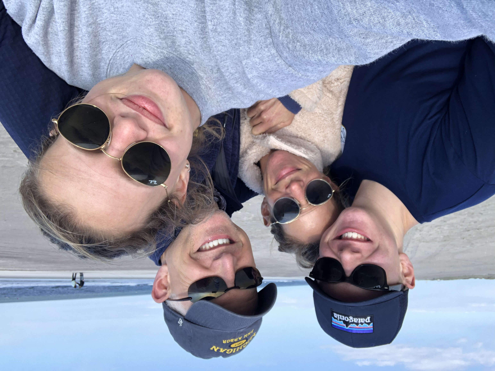
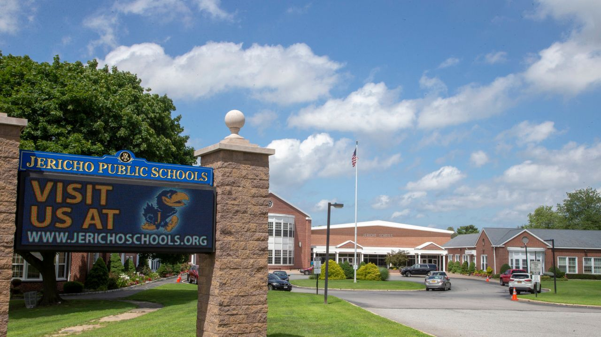
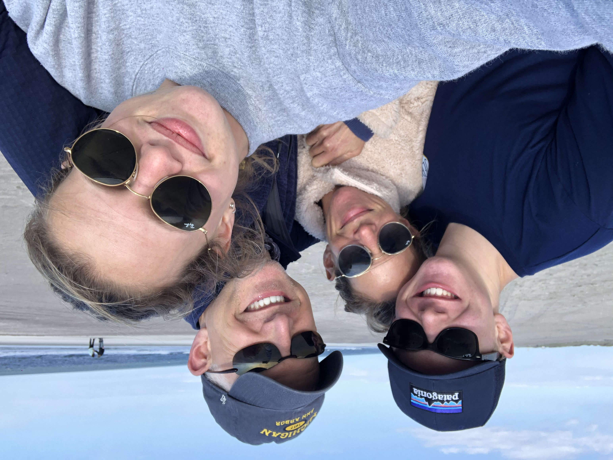
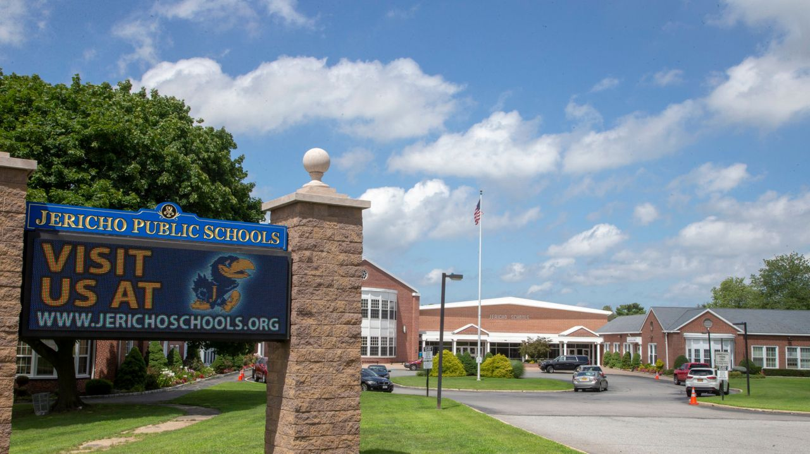

I was born on February 12, 2002 in Jericho, New York on Long Island and have lived there my entrie life. A small suburb in Nassau County, I went to school in the Jericho School District, graduating in 2020 from Jericho High School. I enjoyed growing up in Jericho due to the great memories I made, the many opportunities to I had to have fun doing what I lovec, and the life lessons learned. Now at the University of Michigan, I take with me a part of Jericho and continue to thrive in my pursue of success and academic excellence, just as I did back home.
I grew up in a loving household with three of my favorite people in the world: my Mom, my Dad, and my sister Lindsey. Having my family around made growing up extremely special, and I am fortunate to have such a significant bond with them. My family is one of the most important aspects of my life and love to do so many things together. One particular thing that makes me feel beyond blessed to be a part of my family is the shared love we all have for the University of Michigan, their alma maters and my current school. Michigan has a strong hold over our lives, and more is explained on my Michigan page.
 


